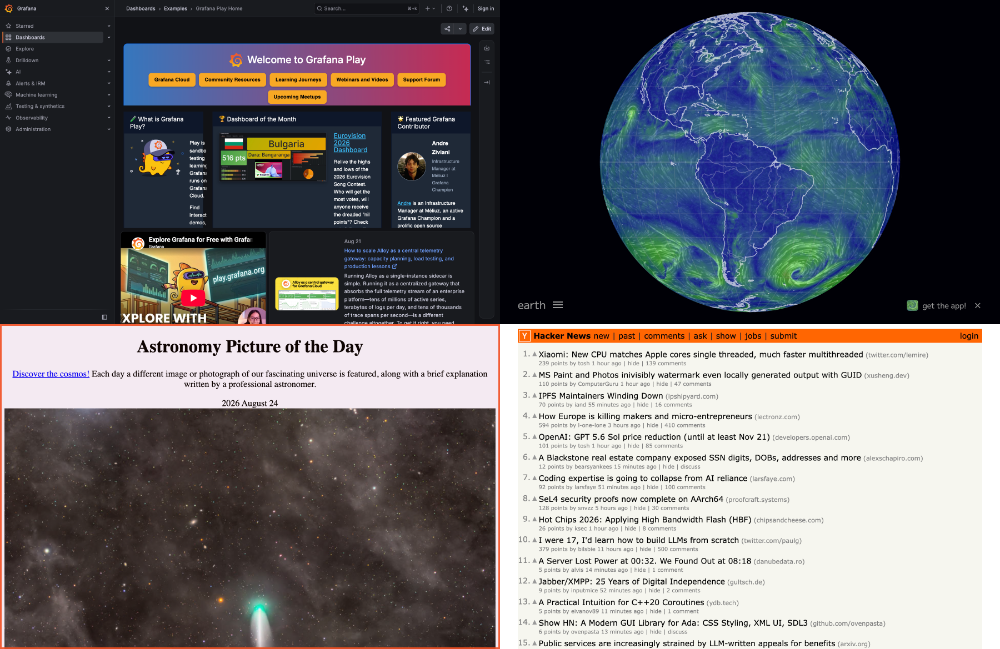
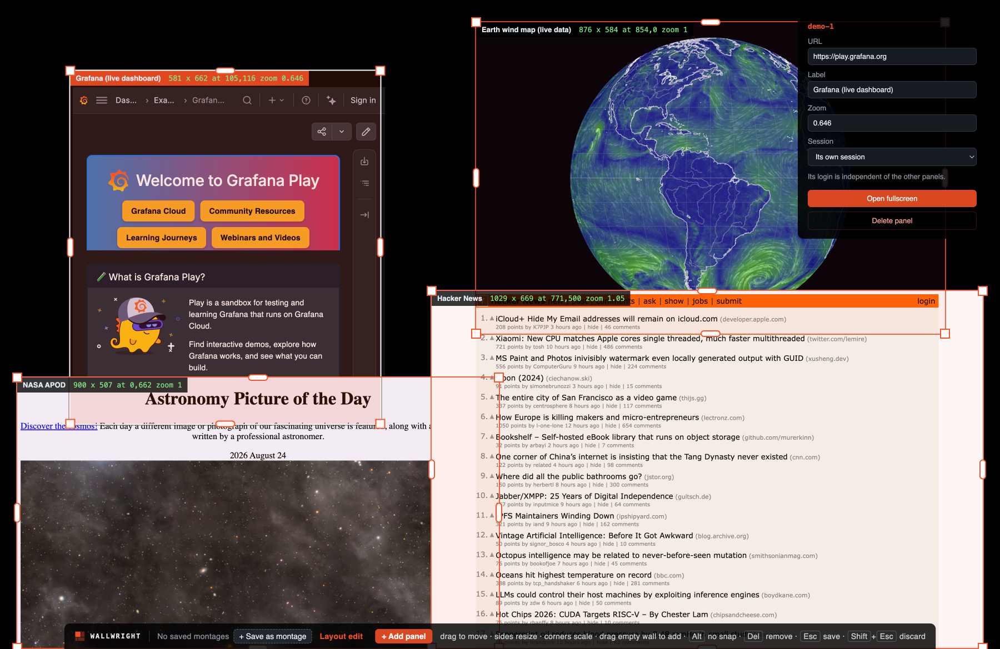

Arrange the wall at the wall
The layout is not baked into a config file. An editor opens on top of the live pages, so a montage is arranged against the real dashboards at the real wall resolution, on site.
Drag to move, drag a side to reflow a page into a new shape, drag a corner to scale it like an image. Panels snap to each other and to the wall edges, so they tile without seams.
Montages you can recall
Save a layout under a name and bring it back with a keystroke: an overview arrangement, a detail arrangement, whatever a given demo needs.
Recalling reuses the panels that have not changed rather than rebuilding them, so switching layouts does not reload pages that were already right — or log anyone out.

Drive a panel from a tablet
Pick any single panel, see it live on a tablet at a comfortable size, and touch it. Tap, drag, scroll, pinch to zoom, and type — including accented characters and other alphabets, which is what signing in to a dashboard usually needs.
Only the panel being watched is sent, captured on its own and shrunk first. The wall's own picture is never touched, and measured against animated 3D and live charts it keeps its full frame rate while somebody works on a tablet.

Built to be left alone, and checked on from anywhere
- A status page shows every panel's address, memory and recent crashes, from a laptop or a phone
- The same page changes an address, opens a panel fullscreen, reloads or rebuilds it
- Each panel keeps its own login, and it survives a restart
- Panels can share one login where several show the same app
- A watchdog reloads a panel that dies, and backs off rather than hammering it
- Memory is watched, and an idle panel is rebuilt before the wall is at risk
- Starts on its own at login, with no desktop to interact with
- A panel may only load addresses you have allowed
- Camera, microphone and location are denied unless granted per panel
- Verified by a 72-hour unattended run, and tests on every change